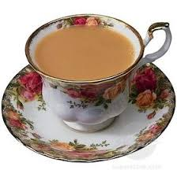

Tea

Description
a delicious hot beverage created by steeping dried
tea leaves in hot water.
THe addition of a small amount of cream and sugar
are found by some to enhance the taste.
Ingredients
- Tea, loose or bagged
- Water
- Optional milk, cream and sugar
- Optional tea ball/bag if using loose tea
Directions
- Fill kettle with cold water, bring to almost boiling
- Place loose tea in an infuser, for loose tea
- Place a tea bag or infuser in a mug
- Fill mug with water
- Steep 3-5 minutes
- Add optional milk, cream and sugar
Home